行程详解
16 站。点一站展开看走法和提示；“历史与文化”在每一站最下面，默认折叠。
上午 · 旺角
这一段的地图

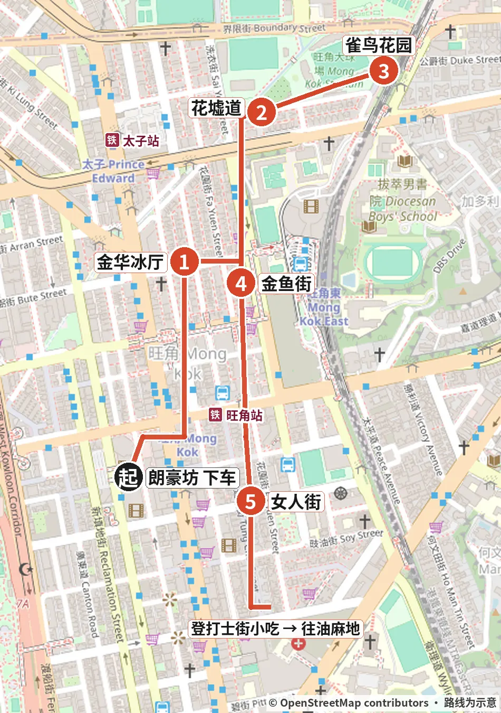
起约 10:30旺角 · 朗豪坊下车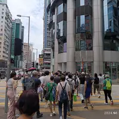
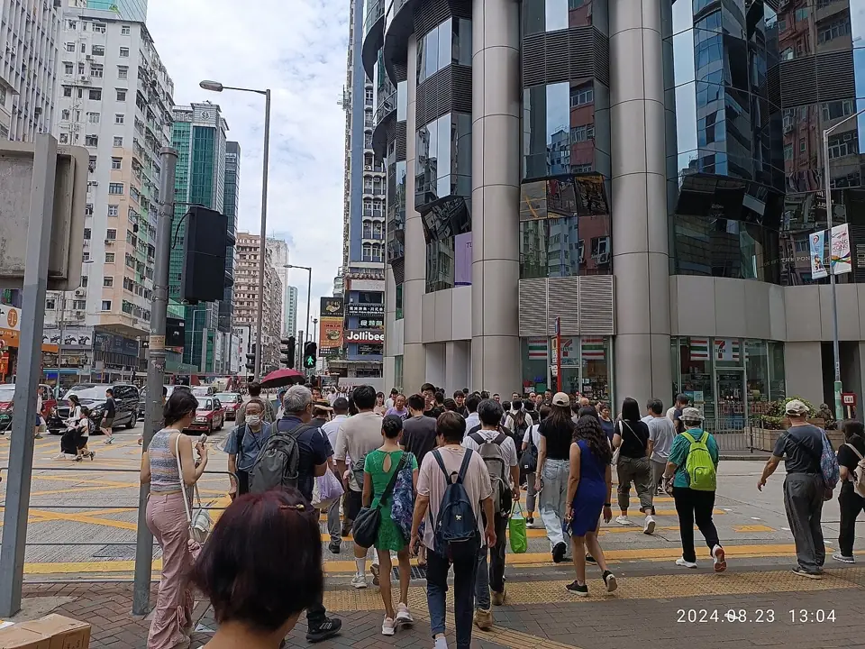

- 下车后
- 朗豪坊商场里有洗手间。然后沿西洋菜南街往北走，去吃早午餐。
- 下雨
- 周六早上预报有骤雨。雨大就先在商场里等一会儿，或者直接进金华冰厅慢慢吃。
历史与文化：“旺角”原来叫“芒角”
这里古称芒角：一片长满芒草、伸进海里的海角。1819 年的《新安县志》已经记有芒角村，村民多是客家人，种菜、种花、养猪养鸡。
今天的街名还留着当年的田地：西洋菜街种西洋菜，通菜街种通菜（空心菜），花园街种花。1860 年九龙半岛割让后，村民把菜和花运到对岸港岛去卖。后来填海、修路，“芒角”改写成吉利的“旺角”，英文 Mong Kok 仍是“芒角”的读音。
吉尼斯世界纪录曾把旺角称为全世界最繁忙的地区，人口密度约每平方公里 13 万人。朗豪坊是 2004 年开业的市区重建项目，原址包括专门卖鸟的康乐街（“雀仔街”）；鸟贩后来搬到了第 3 站的雀鸟花园。
110:40–11:15金华冰厅 · 早午餐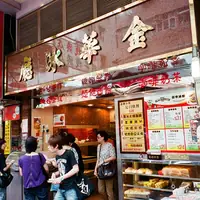
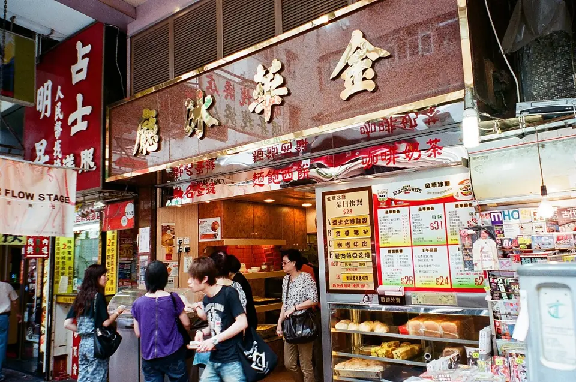
.jpg){kind=link}
- 怎么走
- 朗豪坊沿西洋菜南街往北走约 8 分钟，到弼街右转。地址：太子弼街 47 号。
- 吃什么
- 菠萝油（招牌）、蛋挞、冻柠茶或热奶茶。人均约 HK$40–60。
- 提示
- 周末常排队，要“搭台”（和陌生人拼桌）。排队超过 15 分钟就换附近任何一家茶餐厅，点“常餐”。带现金。点餐用语见贴士页。


历史与文化：冰室、菠萝包和丝袜奶茶
冰室是茶餐厅的前身：卖冷饮、雪糕、三文治、西饼的平民西式小店，1960 年代以后在香港普及。后来加卖粉面饭，就成了什么都有的茶餐厅。现在还叫“冰室”“冰厅”的老店，多数是 1960–70 年代开的。
菠萝包里没有菠萝。面包顶上那层金黄、裂开的酥皮像菠萝的表皮，所以叫菠萝包；夹一片冻牛油就是“菠萝油”。2014 年，菠萝包制作技艺列入香港非物质文化遗产清单。
港式奶茶又叫“丝袜奶茶”：冲茶用的棉布滤袋被红茶染成褐色，看上去像丝袜。它也在香港非物质文化遗产名录里。把奶茶和咖啡兑在一起叫“鸳鸯”，是香港独创的喝法。
211:20–11:50花墟道
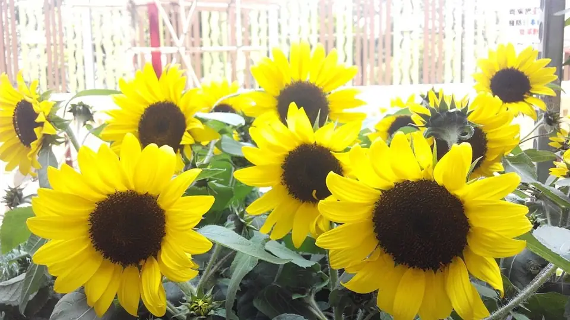

- 怎么走
- 从弼街往北，穿过太子道西就是，步行约 6 分钟。
- 看什么
- 鲜花、兰花、多肉、盆栽从店里一直摆到人行道上。旁边的园艺街、太子道西也都是花店。
- 提示
- 只看不买：鲜花、植物、泥土不能带回内地。下雨时多数店有檐篷，可以沿着店面走。
历史与文化：“墟”是集市
“墟”是岭南对定期集市的叫法。旺角一带明清时就是芒角村种花的地方，花园街因此得名；花农在这附近摆卖，慢慢固定成今天的花店街。
农历新年前，这里会挤得走不动：买年花是香港人过年的大事，桃花求姻缘和人缘，年桔取“吉”，水仙、兰花、剑兰各有好意头。
311:50–12:15园圃街雀鸟花园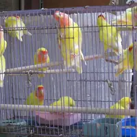
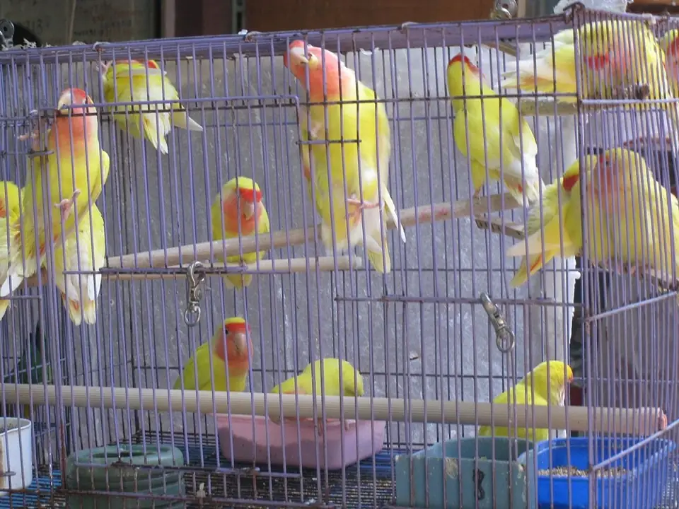

- 怎么走
- 花墟道走到东头就是入口，步行约 4 分钟。每天 7:00–20:00 开放，免费。
- 看什么
- 约 70 个鸟档，卖雀鸟、手工竹鸟笼、瓷食罐和活虫鸟食；老街坊提着鸟笼来聊天、听鸟叫。入口有一幅“百鸟图”石雕。
- 提示
- 不要用手逗鸟，拍照别开闪光灯。活鸟不能过关。
历史与文化：从“雀仔街”搬来的鸟市
旺角原来有一条专门卖鸟的康乐街，俗称雀仔街。1990 年代那一带重建（后来建成朗豪坊），为了保住这门行当，政府在园圃街另建了这座花园安置鸟贩，1997 年落成，占地约 3,000 平方米。
养鸟是老一辈广东人的消遣：清早提着鸟笼上茶楼“一盅两件”（一盅茶、两件点心），把鸟笼挂在座位旁，一边喝茶一边听鸟唱。做竹鸟笼是一门快要失传的手艺。
412:25–12:45金鱼街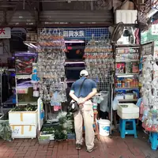
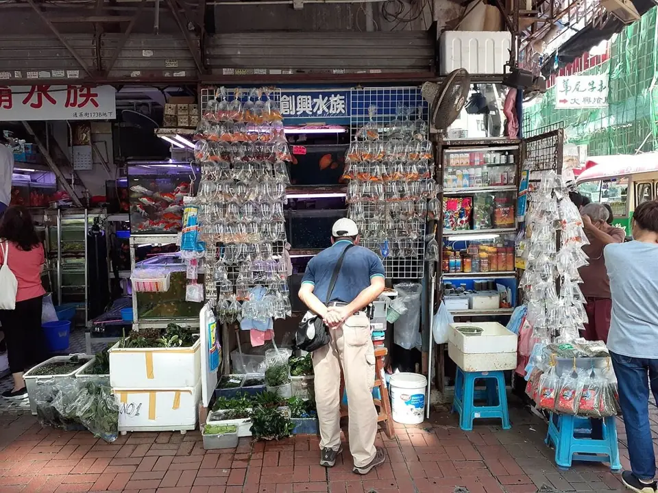

- 怎么走
- 原路回到弼街。通菜街从弼街往南到旺角道的这一段就是金鱼街，约 10 分钟。
- 看什么
- 几十家水族店：金鱼、热带鱼、乌龟、水草，都装在透明塑料袋里挂成一面墙。
历史与文化：为什么用塑料袋卖鱼
1950 年代起，金鱼小贩在油麻地火车站（今天的旺角东站）附近摆地摊。1970 年代中，他们嫌摆摊有时间限制，加上养鱼风气兴起，就集中搬进了通菜街的铺位。香港地方小，鱼一直是装在塑料袋里挂着卖，成了这条街的标志。
广东人讲“水为财”，养金鱼取“金玉满堂”的意头，所以很多店铺和家里都摆鱼缸。
512:45–13:25女人街 · 西洋菜南街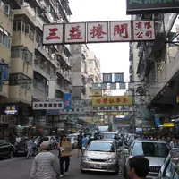
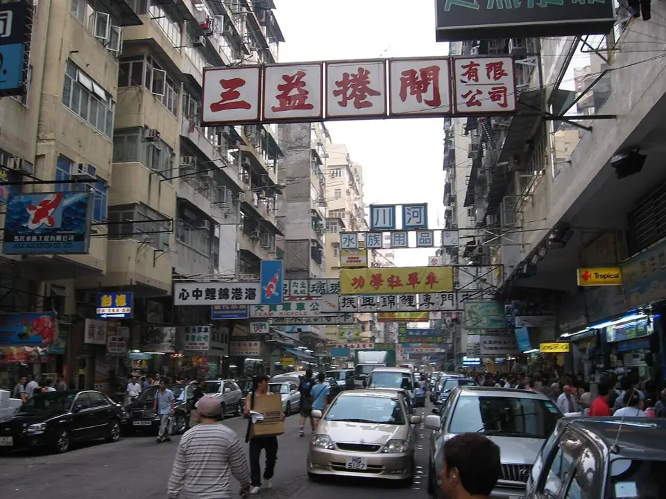

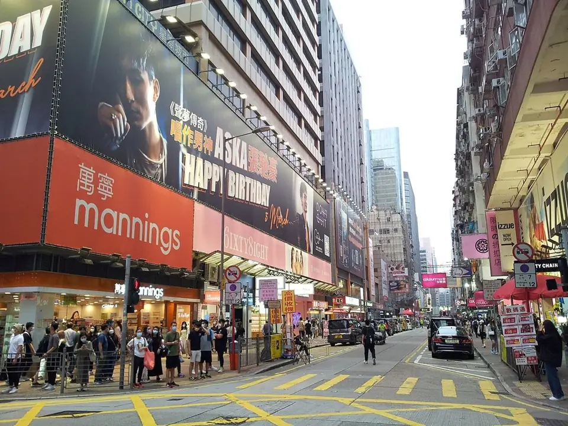

- 怎么走
- 沿通菜街一直往南，过了亚皆老街就是女人街，一路走到登打士街，约 500 米。
- 看什么
- 女人街：衣服、饰品、手机壳、纪念品，摊档中午起陆续开，可以砍价。平行的西洋菜南街是药妆店、电器店和“楼上书店”；花园街南段是卖运动鞋的“波鞋街”。
- 午饭
- 登打士街、豉油街一带小食店最集中：咖喱鱼蛋、烧卖、鸡蛋仔、格仔饼、碗仔翅、卤水串（如登打士街 55 号的肥姐小食店）。每样约 HK$15–40，边走边吃。
- 提示
- 人多，背包背在前面；先问价再买。
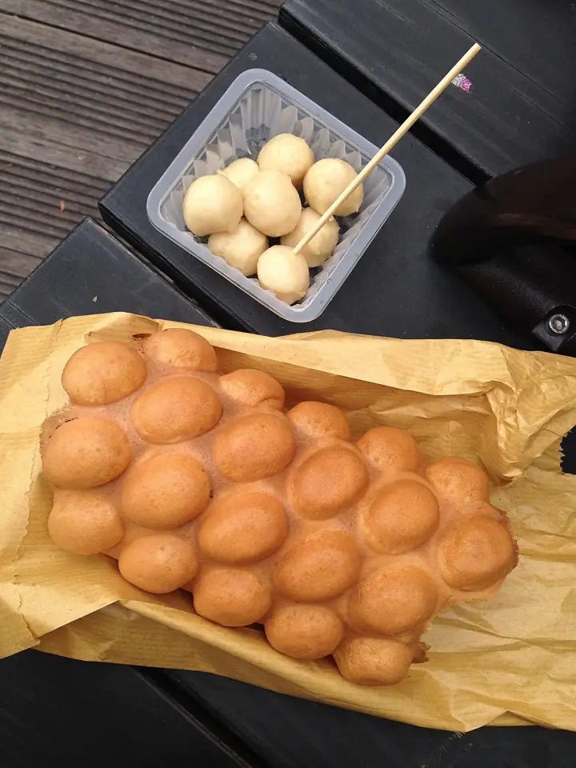
.jpg){kind=link}
历史与文化：女人街的来历，和消失的“菜街”卖唱
1970 年代街上无牌小贩很多。1975 年 3 月，市政局在九龙设立“小贩认可区”，通菜街这一段是第一个。早期摊档多卖女装和女性用品，所以叫女人街。
西洋菜南街从 2000 年底起是行人专用区，入夜后满街卖唱、杂耍，很热闹，也吵得居民受不了。区议会投票后，行人专用区在 2018 年 8 月取消，汽车重新开了进来。
登打士街传统上是旺角和油麻地的分界。2004 年在通菜街和豉油街交界挖出过东汉的陶器：这片闹市，两千年前就有人住。
下午 · 油麻地 → 尖沙咀
这一段的地图

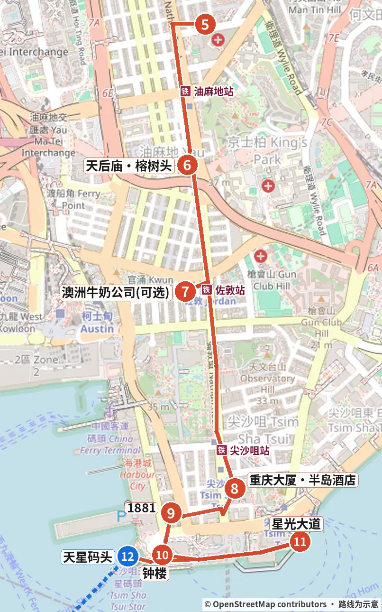
613:35–13:50油麻地天后庙 · 榕树头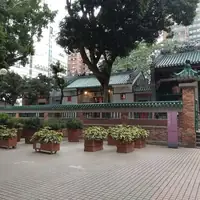
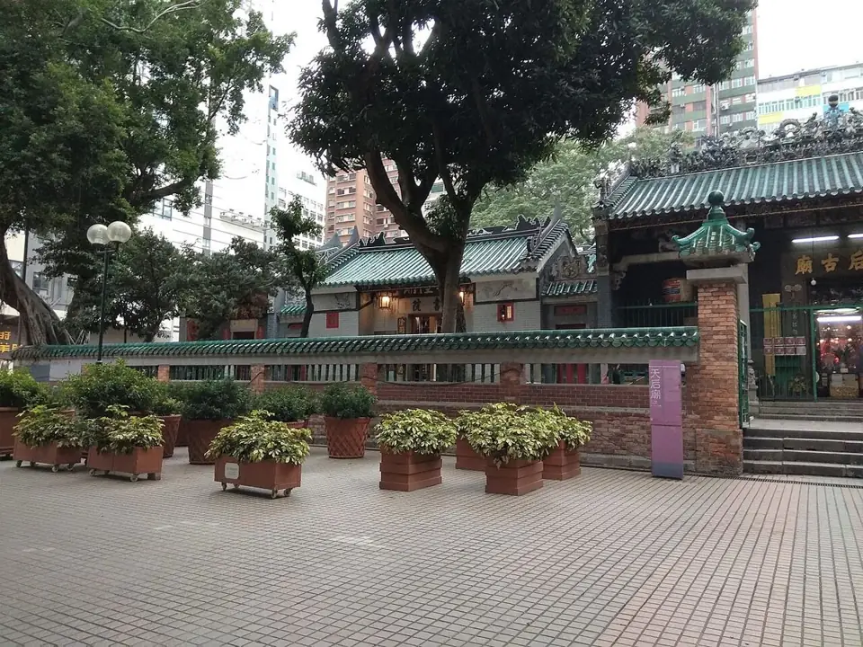

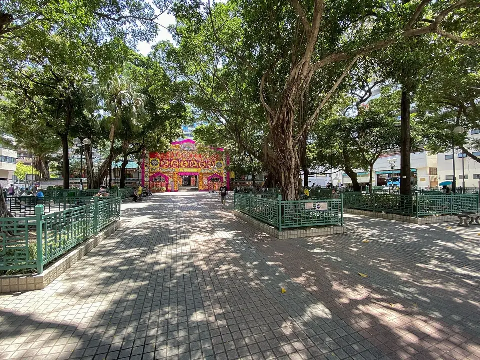

- 怎么走
- 登打士街走到弥敦道，左转往南约 8 分钟，到众坊街右转，庙就在庙街边上。
- 看什么
- 五座建筑并排：天后庙正殿、观音楼、城隍庙、社坛、书院。庙前榕树下常有老人下棋。开放时间约 9:00–17:00。
- 提示
- 庙里香火很旺，不要对着神像开闪光灯。庙街夜市傍晚才摆，白天只是普通街道。
历史与文化：渔民的庙，和“油麻地”三个字
1865 年，水上人（渔民）在海边建了一座小天后庙。天后就是妈祖，是渔民和航海人的保护神。1874 年大风灾把庙毁了，街坊集资在现址重建，1876 年动工，到 1890 年才全部完成。
当年庙前的空地是渔民晒船上麻缆的地方，周围开了很多卖桐油、麻缆、修船的店，这一带就叫油麻地。庙南、庙北的两条街后来合称庙街。那时庙门对着海，后来一再填海，现在已经看不到海了。
庙前广场叫榕树头。以前入夜后有人说书、唱曲、算命、卖艺，被叫做“平民夜总会”。2020 年，整个庙宇建筑群列为法定古迹。
713:55–14:30澳洲牛奶公司可选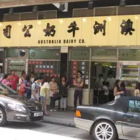
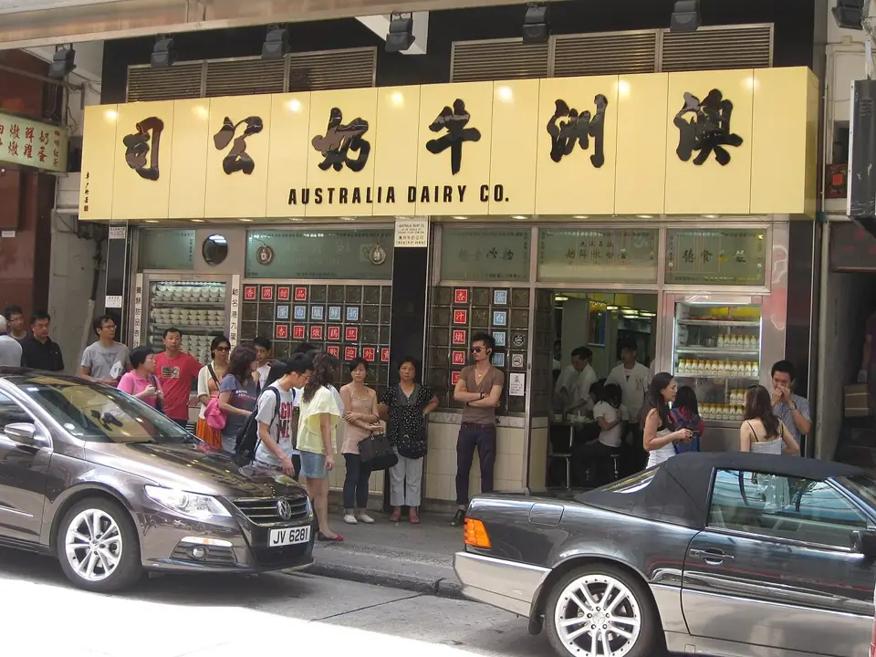

- 位置
- 佐敦白加士街 47–49 号，从天后庙往南走约 8 分钟。
- 吃什么
- 炒蛋多士、蛋白炖鲜奶、杏汁炖鸡蛋（都有冷热）。人均约 HK$40–60。
- 提示
- 先想好吃什么再坐下，要搭台，吃完就走。逢周四休息，带现金。周六常排 20 分钟以上，超过就放弃。
- 代价
- 吃这一站要多花约 35 分钟。吃了，就要在尖沙咀少逛半小时，或者第 13 站不坐叮叮车、改坐港铁。
历史与文化：为什么叫“澳洲”
1970 年开业。店主年轻时在澳洲的农场做过工，所以起了这个名字。它不卖饭和面，只有多士、炒蛋、通粉、炖奶，是老式冰室的路数。
这家店出名的是速度：点完菜十几秒就上桌，很多人从坐下到结账只用十来分钟，店员催客人也是出了名的。可以把它当作香港“快”文化的一个标本来看。
814:00–14:25沿弥敦道走到尖沙咀
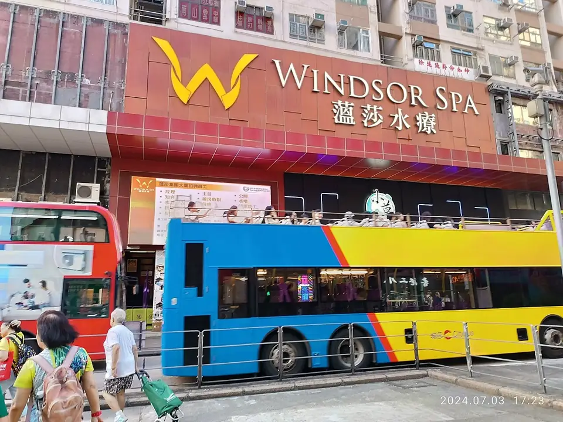

- 怎么走
- 沿弥敦道一直往南，约 1.6 km，走 20–25 分钟。累了就坐港铁：油麻地站或佐敦站 → 尖沙咀站。
- 沿途
- 佐敦道口 → 九龙公园外的一排老榕树 → 九龙清真寺 → 重庆大厦 → 半岛酒店 → 梳士巴利道。
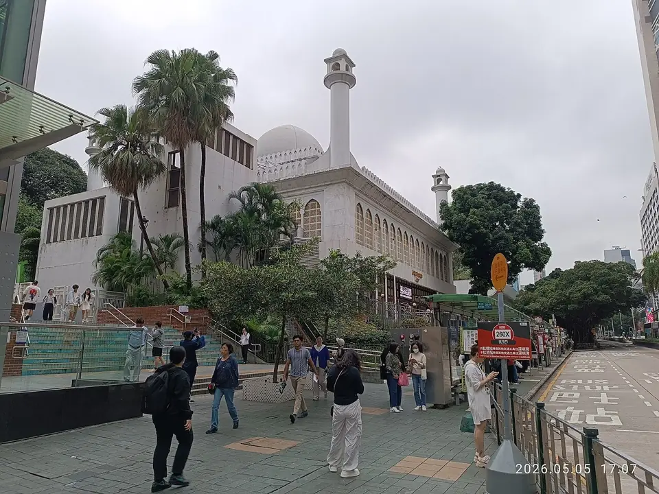

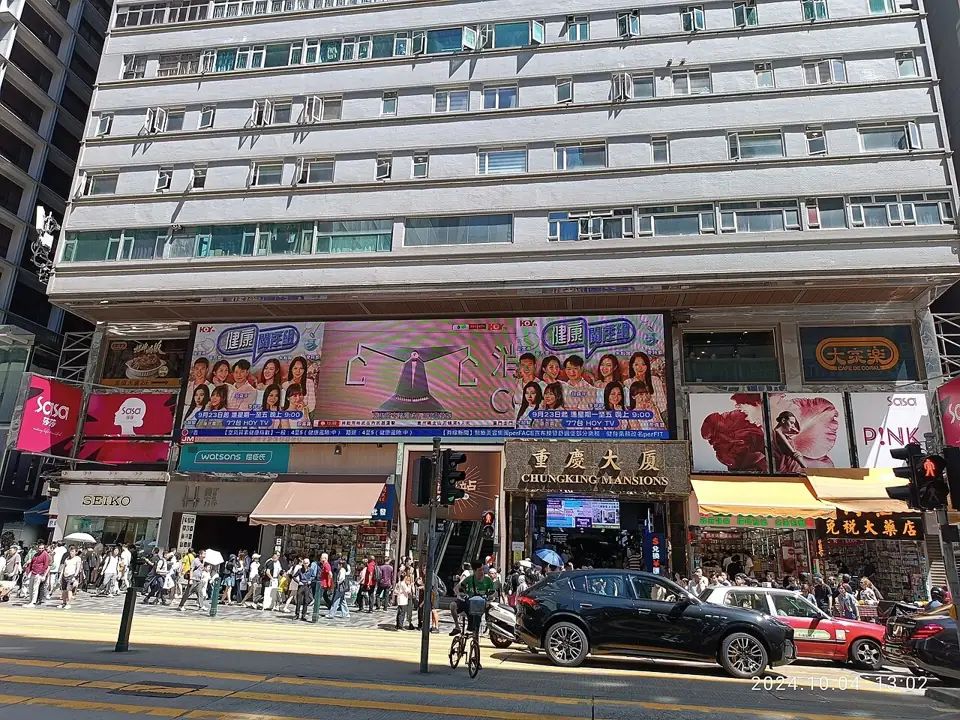

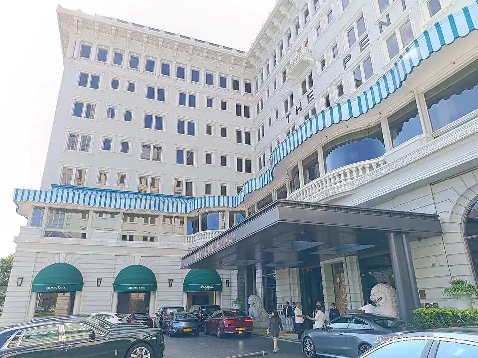

历史与文化：“弥敦的蠢事”，和路边三座楼
弥敦道是九龙的第一条路，1860 年由英军工兵动工，原名罗便臣道。港督弥敦上任后把它拓宽成六车道的林荫大道，那时九龙还很荒凉，这条路被讥为“弥敦的蠢事”。1909 年改名弥敦道，全长 3.6 公里。九龙公园外那一排大榕树，是当年林荫道剩下的。
九龙清真寺：香港最大的清真寺，可容纳约 3,500 人。最早建于 1896 年，供驻港英军里的穆斯林士兵使用；现在的白色建筑是 1984 年落成的。
重庆大厦：1961 年落成，原本是住宅楼，如今塞满了廉价宾馆、咖喱店、找换店，住客和商贩来自世界各地。王家卫 1994 年的电影《重庆森林》在这里取过景。
半岛酒店：1928 年开业。1941 年 12 月 25 日，港督杨慕琦在酒店三楼的日军司令部投降，香港沦陷，这一天被称为“黑色圣诞”。门口的绿色劳斯莱斯车队和大堂下午茶是它的招牌。
914:25–14:451881 Heritage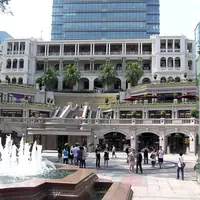
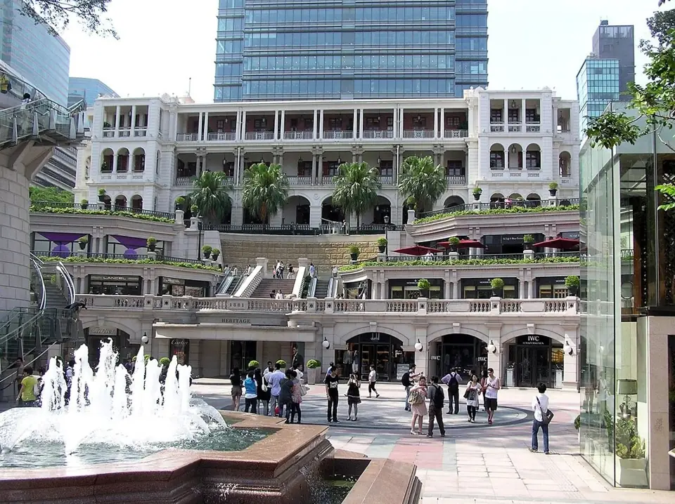

- 位置
- 弥敦道走到尽头右转，广东道和梳士巴利道交界。免费进入。
- 看什么
- 维多利亚式主楼和拱廊、圆形的时间球塔、红砖的旧九龙消防局。
历史与文化：水警、时间球和一场争议
这里是前水警总部，1884 年落成，一直用到 1996 年，是香港现存最古老的政府建筑之一，1994 年列为法定古迹。主楼当年就在海边，楼前的马路和海滨都是后来填出来的。日占时期这里是日本海军的基地。
时间球塔：每天上午把一个铜球升到杆顶，下午 1 点整落下，港里的船看到就能校准航海钟。这套装置用到 1907 年。
2003 年政府把它批给长江实业改建成酒店和商场，2009 年开放。这是香港第一个由私人发展商主导的古迹活化项目，但改建时把原来的小山和大部分大树都移走了，受到不少批评。
1014:45–14:55尖沙咀钟楼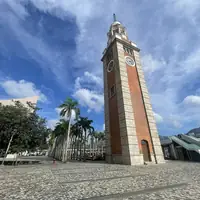
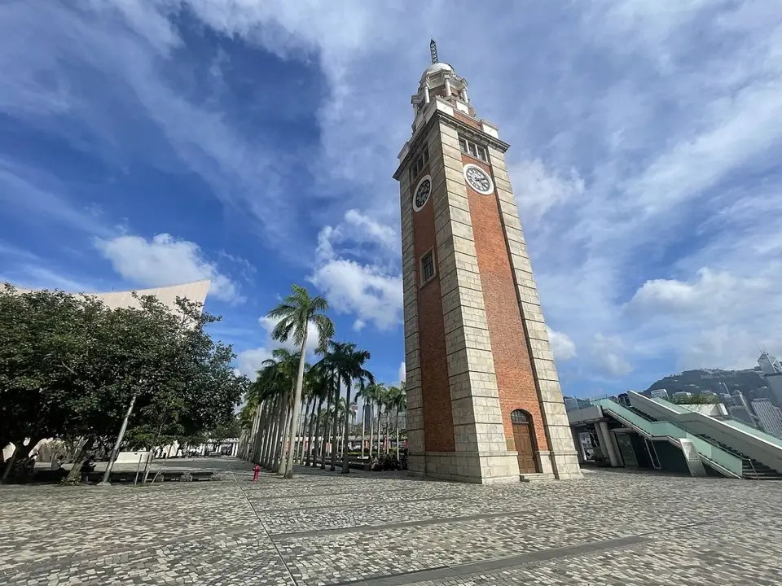

- 位置
- 过马路往海边走 3 分钟，天星码头旁边、香港文化中心前面。
- 看什么
- 红砖和花岗石砌成，高 44 米。每天 8:00 到午夜整点报时。
历史与文化：从这里可以坐火车去广州
钟楼是九广铁路尖沙咀总站的一部分，1915 年建成，车站 1916 年启用。那时从这里上车可以直达广州，再接内地的铁路北上。
1975 年总站搬到红磡，旧车站在 1977 年拆除。当时有保育团体请愿反对，最后只留下了钟楼。原来车站的位置建起了香港文化中心、太空馆和艺术馆。钟楼 1990 年列为法定古迹。
钟声在 1950 年停了，直到 2021 年 12 月才恢复。
顺带一说：尖沙咀旧称香埗头，东莞一带出产的香木从这里装船运出。有一种说法认为，“香港”这个名字就和这门香木生意有关。
1114:55–15:30星光大道 · 维港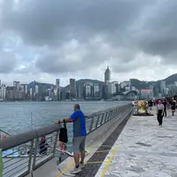
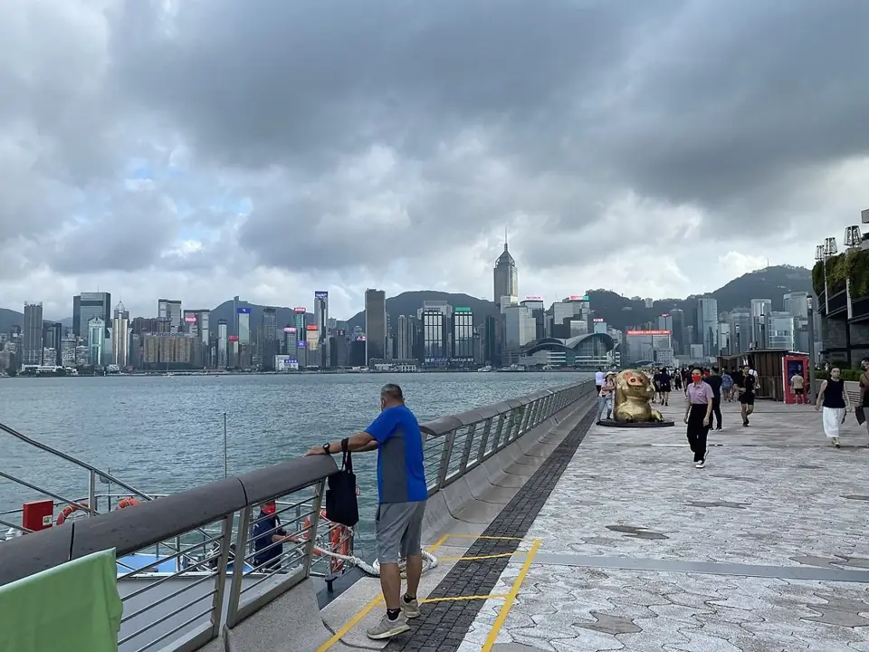
.jpg){kind=link}
- 怎么走
- 从钟楼沿海滨长廊往东走 8–10 分钟。
- 看什么
- 对岸从中环到湾仔的高楼。栏杆上有电影人的手印，还有李小龙和梅艳芳的铜像。旁边的 K11 MUSEA 可以进去歇脚、上洗手间。
- 提示
- 15:25 往回走，回天星码头约 12 分钟，赶 15:45 前后的船。
历史与文化：电影、货仓码头和维多利亚港
星光大道仿照好莱坞星光大道，2004 年开放，纪念香港电影人；2019 年翻新后重开。李小龙铜像立于 2005 年，梅艳芳铜像立于 2014 年。
旁边 K11 MUSEA 这块地，1910 年起是蓝烟囱货仓码头（Holt's Wharf），曾是重要的货运和铁路转运点；1970–80 年代改建为新世界中心，2019 年变成现在的艺术商场。名字来自“A Muse by the Sea”（海边的缪斯）。
维多利亚港以英国维多利亚女王命名，水深、避风，是香港成为港口城市的根本。多年填海让它越来越窄，1997 年起有专门的法例限制在港内填海。每晚 8 点两岸有“幻彩咏香江”灯光秀，这次赶不上。
傍晚 · 过海，港岛西
1215:45–15:55天星小轮：尖沙咀 → 中环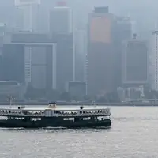
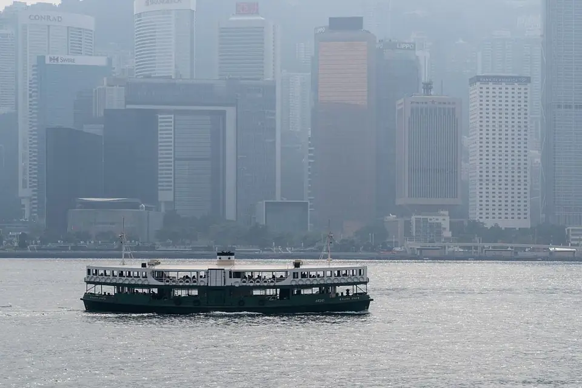

- 怎么坐
- 尖沙咀天星码头，走“中环”的闸口，拍八达通。上层周六约 HK$6.5（天星申请过加到 $8.5，以闸口显示为准）。几分钟一班，航程约 10 分钟。
- 看什么
- 坐上层靠船边。开船后回头看钟楼和九龙，往前看中环的高楼。
- 必须守时
- 最晚坐 16:00 的船。再晚，到坚尼地城时天就快黑了。
历史与文化：一个巴斯商人、一句诗和一场骚动
1880 年代，巴斯商人米泰华拉办起“九龙渡海小轮公司”，1898 年改名天星小轮。他的船全都以“星”命名：晓星、午星、夜星、日星……据说是因为他喜欢丁尼生的诗《过沙洲》，第一句就是“日落与晚星”。
1966 年，天星小轮申请把头等船费从 2 角加到 2 角 5 仙。青年苏守忠在中环码头绝食抗议，被捕后引发了连续几晚的九龙骚动。
中环原来的天星码头（带钟楼的爱丁堡广场码头）因为填海在 2006 年拆除，当时很多市民到场反对，是香港保育运动的标志性事件。现在的中环 7 号码头是之后启用的。
1316:10–16:45叮叮车：中环 → 坚尼地城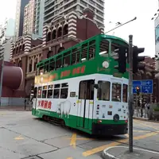
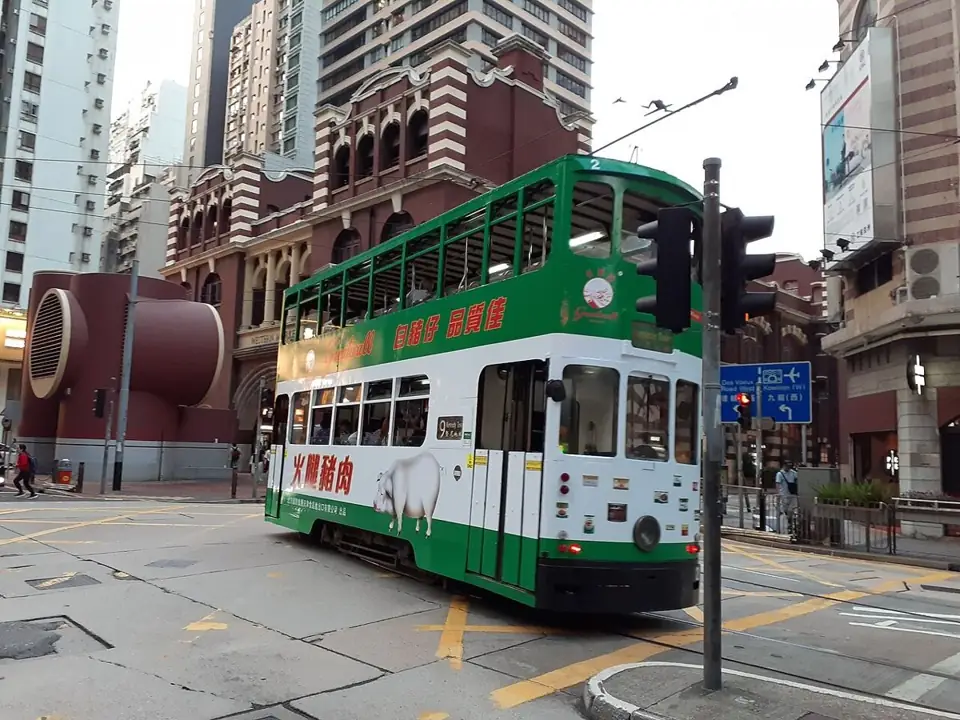

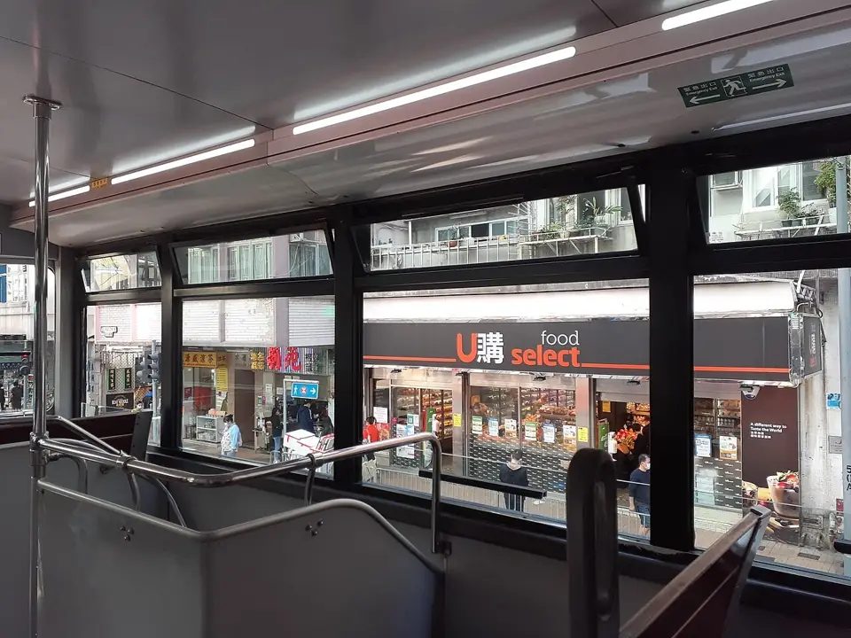

地图：中环码头怎么走到电车站

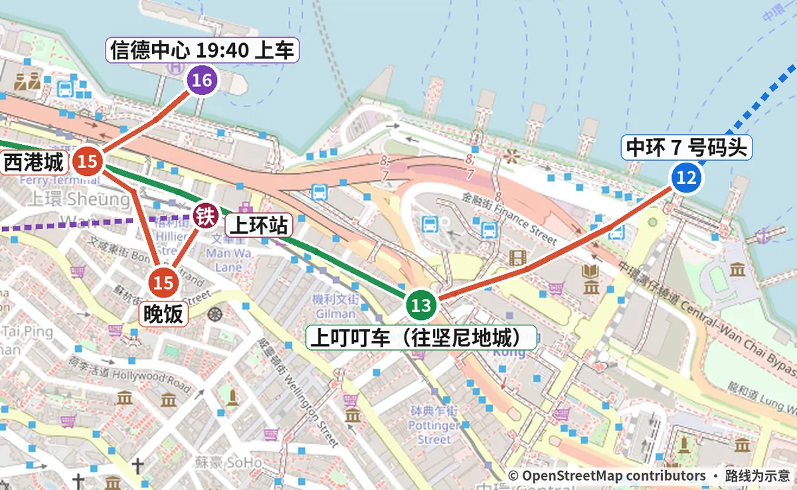
- 去车站
- 中环 7 号码头上岸，走行人天桥穿过国际金融中心（IFC）商场，到德辅道中（恒生银行总行、中环街市一带），约 10–12 分钟。电车站在马路中间。
- 怎么坐
- 等车头写着“坚尼地城 Kennedy Town”的车。后门上车，下车时在前门拍八达通，成人 HK$3.3。上层最前或最后一排视野最好。约 30–35 分钟到总站。
- 窗外
- 中环街市 → 西港城（红砖楼）→ 德辅道西“海味街”→ 石塘咀 → 坚尼地城海旁。
- 提示
- 写着“石塘咀”“上环（西港城）”的是短途车，不到坚尼地城；上错了就下车等下一辆。时间不够就改坐港铁，中环 → 坚尼地城约 10 分钟。
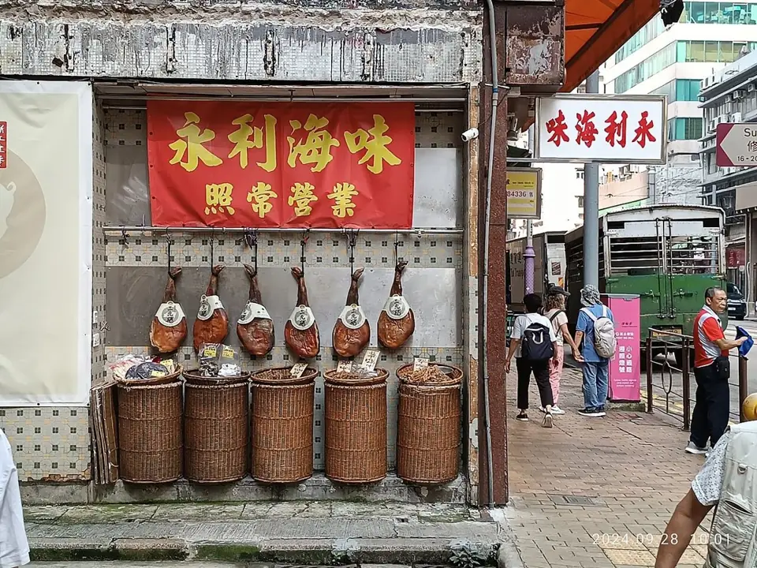

历史与文化：沿着旧海岸线走的电车
香港电车 1904 年通车，1912 年开始用双层车。司机脚下有个踏板，踩下去敲钟提醒行人，“叮叮”就是这么来的。2021 年它拿到一项吉尼斯纪录：全世界最大的服务中双层电车车队。
电车走的德辅道，原来就是海边。19 世纪中环到西环一带不断填海，新填出来的海旁大道以第 10 任港督德辅命名，电车轨道铺在上面。所以坐电车，其实是沿着一百多年前的海岸线走。
上环是开埠后华人最早聚居的地方，1841 年英军就是在这里的水坑口一带登陆。做内地和南洋货物转口的商行叫南北行，海味、参茸、药材这些专门街，就是那段转口贸易留下的。
石塘咀在 1903 到 1935 年间是妓院和酒楼集中的地方，人称“塘西风月”。梅艳芳、张国荣主演的电影《胭脂扣》讲的就是那里的故事。
中环街市是 1939 年启用的包豪斯风格街市，2021 年活化后重新开放。连着它的半山自动扶梯全长约 800 米。
1416:50–17:50坚尼地城：海旁看黄昏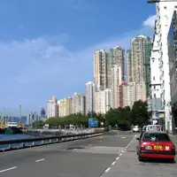

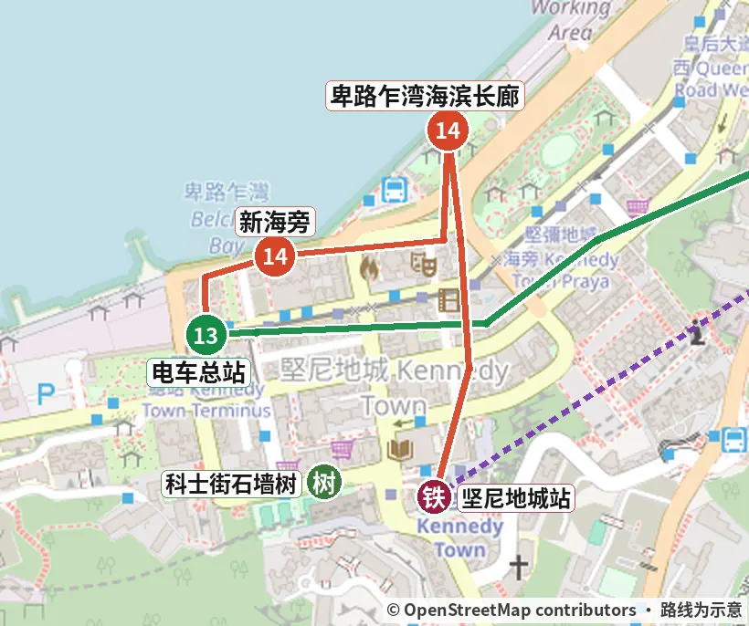
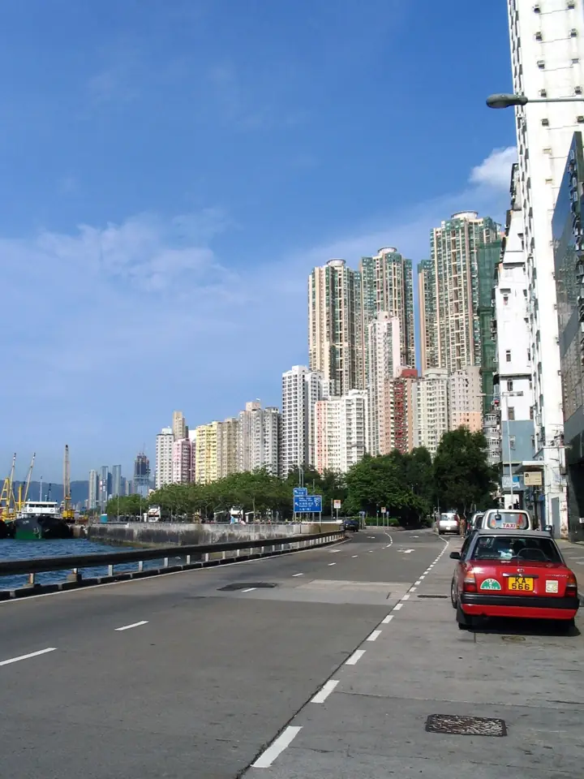

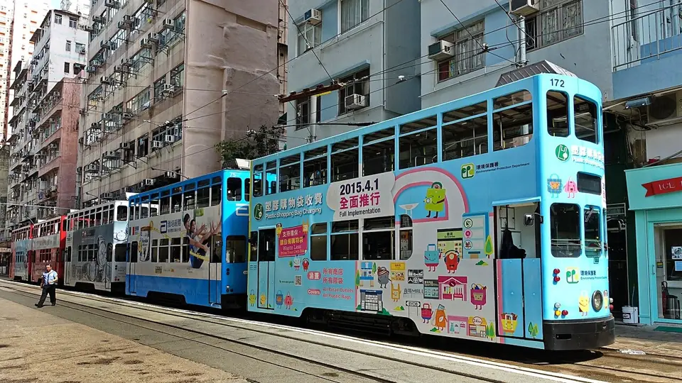
.jpg){kind=link}
- 走法
- ① 电车总站下车，往北走 2 分钟到新海旁，在爹核士街口看“街道尽头是海”和电车转弯。② 沿海旁往东走约 5 分钟，到卑路乍湾海滨长廊等日落。③ 天黑前往南走回港铁站，站 C 出口旁有科士街石墙树。
- 看什么
- 对岸的西九龙和昂船洲大桥，左边远处是青衣，近处两个小岛是大小青洲。
- 日落
- 11 月中旬太阳落在西南偏西，差不多顺着海旁的尽头落下去，最后几分钟可能被西边的楼和摩星岭挡住。这里看的是晚霞、海面和对岸亮灯，不是太阳入海。日落 17:40，约 18:05 天黑。
- 提示
- 不要站到马路上拍照，这里车多，政府专门立了告示牌。17:50 往港铁站走。
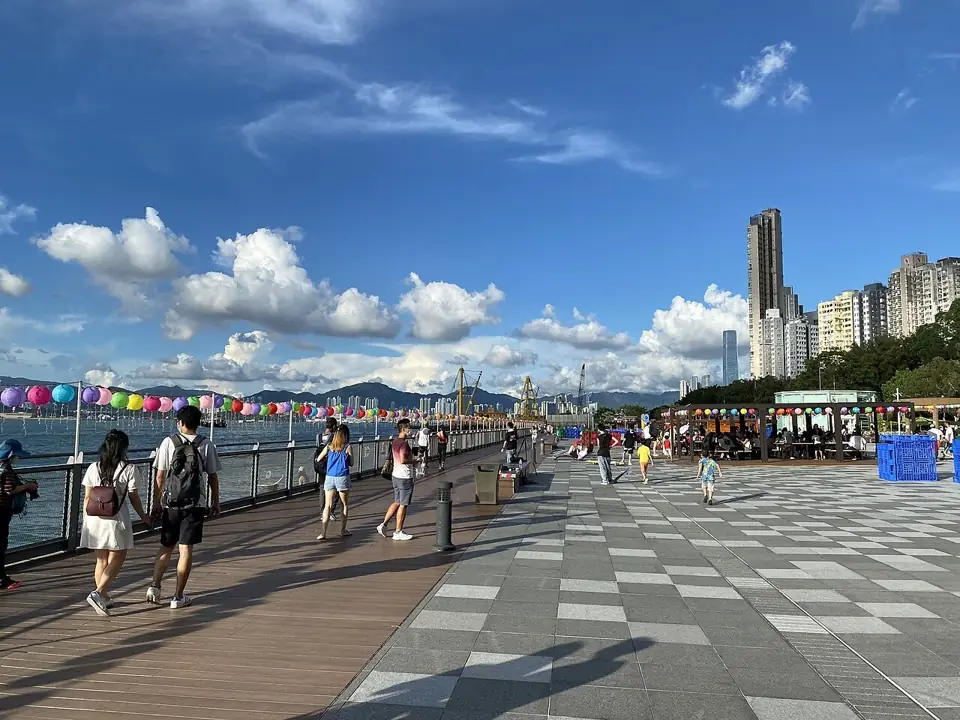
.jpg){kind=link}
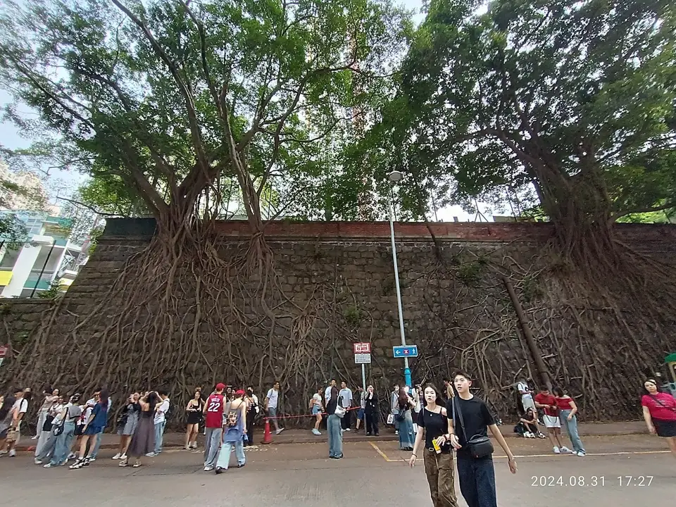

历史与文化：港岛的“后院”怎么变成打卡地
坚尼地城以第 7 任港督坚尼地（1872–1877 年在任）命名，是维多利亚城最西的一角。很长时间里，城市不想要的设施都放在这里：屠房、焚化炉、殓房、家禽和水果批发市场。
2000 年前后这些设施陆续迁走。2014 年 12 月港铁通到这里以后，老区里开出很多咖啡店和酒吧，旧楼、新楼、电车和海挤在一起。2023 年起，新海旁成了内地游客的热门拍照点。
卑路乍湾的名字来自英国海军军官卑路乍，他在 1841 年测绘了这一带的水域。海滨长廊原来是货物装卸区的一部分，2020 年 10 月开放。新海旁的老海堤，在 2026 年 9 月被建议列为二级历史建筑。
石墙树是香港旧城区特有的景观：早年开山修路，用石块砌挡土墙，榕树的种子落在石缝里，根沿着墙面往下爬，最后把整面墙抱住。
晚上 · 上环
1518:15–19:10上环：西港城 · 晚饭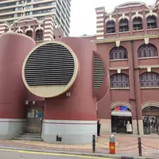
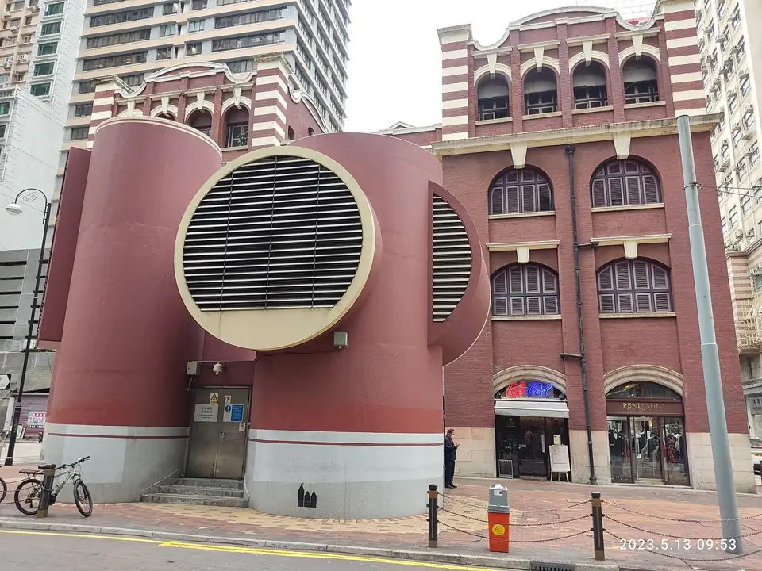

- 怎么走
- 坚尼地城站坐港岛线往柴湾方向，3 站到上环站，约 6 分钟，17:55 上车的话 18:10 前后到。
- 西港城
- 从上环站走 4 分钟。红砖外观随时能看，里面的店多在傍晚关门。
- 晚饭
- 下面几家都在上环站附近，走到信德中心 5–12 分钟。营业时间以当天为准，先在地图上确认。
- 生记粥品专家（毕街 7–9 号）：鱼片粥、及第粥，出餐快。
- 九记牛腩（歌赋街 21 号）：清汤牛腩面，常排队，排队长就别等。
- 沾仔记（中环威灵顿街 98 号）：云吞面、鲮鱼球面。
- 保险选择：信德中心商场里的快餐，吃完下楼就是上车点。
- 必须守时
- 19:10 结账出发，19:20 到信德中心。
历史与文化：香港最老的街市建筑
西港城建于 1906 年，是旧上环街市的北座，红砖配花岗石，属于英国爱德华时代的风格。它是香港现存最古老的街市建筑，1990 年列为法定古迹，1991 年翻新成商场，楼上有一排从“花布街”搬来的布料店。
西港城往西，就是电车上看到的海味街和参茸燕窝街。傍晚店铺陆续关门，街上会安静下来。
1619:20 到 · 19:40 发车上环信德中心：坐大巴回深圳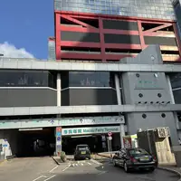


历史与文化：两座红格子楼
信德中心两座大楼 1985–1986 年落成，红色格子外墙很好认。发展商是“赌王”何鸿燊旗下的公司，楼下就是港澳码头，去澳门的喷射船从这里开出，所以这里人流一直很多。